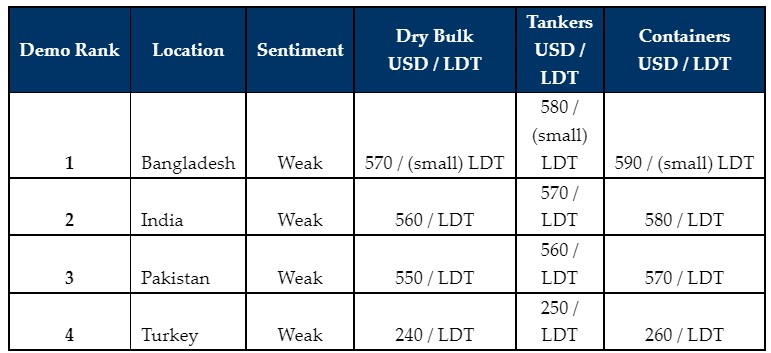

inWeekly Demolition Reports15/08/2022

Despite ALL major ship-recycling destinations registering gains in steel plate prices (in unison) and to varying degrees this week, the summer lull continues across the board, with nearly no fresh tonnage to work on and a majority of vessels mooted for a recycling sale (both from Ship Owners and Cash Buyers alike) being converted back to trading again, especially by a re-energized second-hand market.
Due to tighter controls that were recently imposed by the Central State Bank on every fresh Letter of Credit (L/C) valued at over USD 3 Million, Bangladesh is simply unable to work on any vessels valued over this amount. Making matters potentially worse are the recently brewing rumors that the Bangladeshi Government may even restrict this further down to L/Cs valued at over USD 2 million, which could spell disaster for a market that is generally seeking large LDT units.
Pakistan is also placing similar limits on imports and Gadani Buyers are once again facing difficulties in arranging for U.S. Dollars for large value transactions. In the interim, India is trying its best to scoop up any available / remaining vessels (stainless Steel Tankers or specialist units such as Reefers / Passenger / Offshore vessels) that may be currently available.
Finally, the Turkish market, though slightly firmer this week, is still struggling through a torrid local sentiment that is making local Recyclers simply too nervous to offer, even on the rare unit that makes its appearance.
Overall, it seems to be that the markets need to wait at least until the fourth quarter (or later) of this year before seeing any increase in the volume of tonnage, as most Ship Owners and Cash Buyers remain disinterested to engage in recycling negotiations, whilst sentiments and pricing remain so shaky.
Indeed, it is not even certain if deliveries for large LDT units can take place in both Bangladesh and Pakistan, such is the dire situation regarding global currency depreciations & a shortage of U.S. Dollars, and no Owner is willing to do a deal subject to an uncertain bank / L/C approval.
For week 32 of 2022, GMS demo rankings / pricing for the week are as below.

📄 Download PDF: Ship-recycling-market-insight-week-32-2022-Summer...Lull_.pdfSource: GMS,Inc. ,https://www.gmsinc.net/gms_new/index.php/web